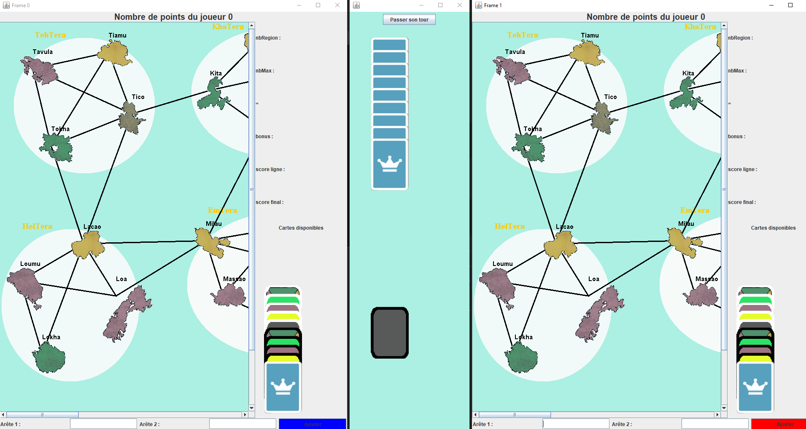

Dans le cadre de notre projet, nous avons développé une application passionnante appelée Cinke Tera.
Cette application se présente comme un jeu multi-joueur captivant où deux joueurs s'affrontent pour colorer des arêtes et accumuler le maximum de points.
Les joueurs s'engagent dans une compétition stratégique, en choisissant soigneusement les arêtes à colorer afin d'optimiser leurs chances de succès.
Cette application, Cinke Tera, a été créée en réponse à un besoin spécifique exprimé par notre client.
En créant cette interface graphique conviviale, nous avons pu fournir à notre client une application qui correspond parfaitement à ses besoins et offre une expérience de jeu immersive et agréable.

Planex
Dans le cadre de notre projet, nous avons développé un site web appelé Planex.
Planex est un générateur de planning et d'équipes d'étudiants, conçu pour simplifier la gestion des emplois du temps et des groupes dans un environnement académique.
Pour réaliser ce site, nous avons utilisé un fichier de données contenant les informations nécessaires. Grâce à un décomposeur fourni par l'IUT et programmé en Java, nous avons pu extraire les données du fichier et les traiter efficacement.
Ensuite, nous avons transcrit ces informations dans notre code Java, tout en utilisant HTML pour concevoir l'interface du site.
Le résultat est un outil convivial et intuitif qui permet aux utilisateurs de créer facilement des plannings personnalisés et de former des équipes d'étudiants de manière efficace.
Planex offre une solution pratique et moderne pour optimiser la gestion des ressources dans un contexte académique.